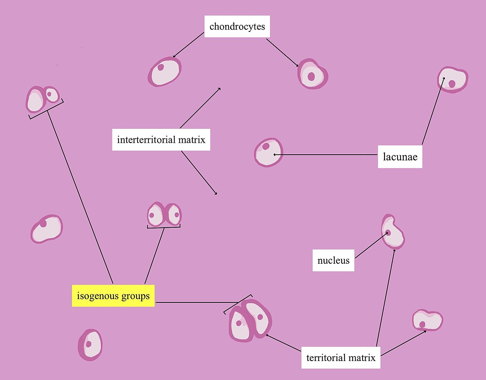
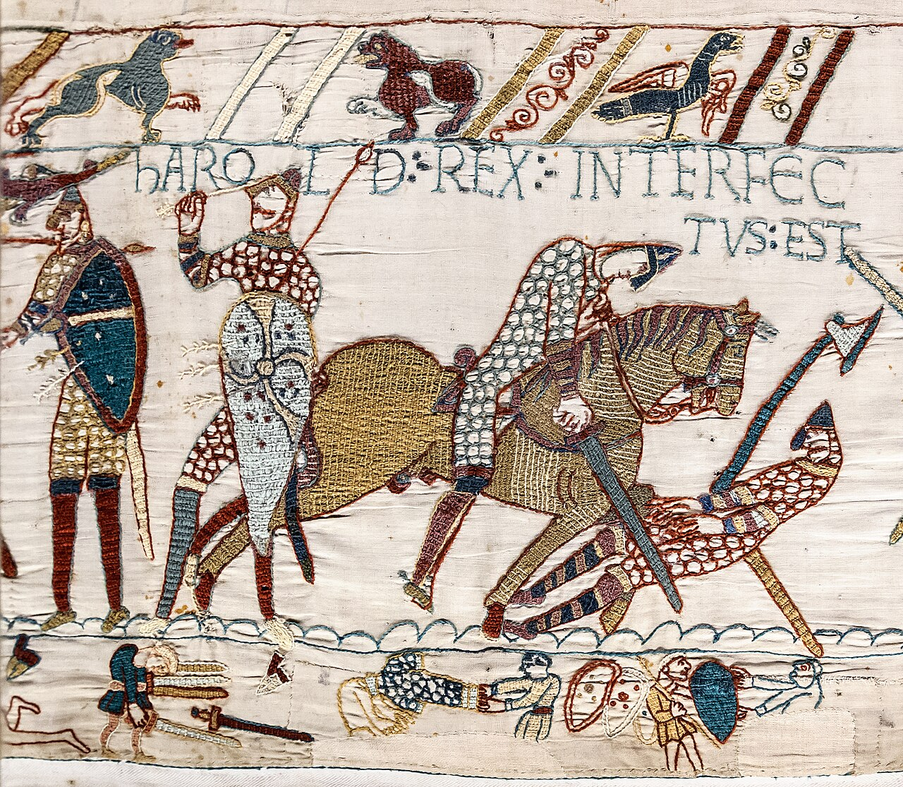

diario de la mañana — el mundo, tu ciudad y lo que te asombra
Nº 14Miércoles 14 de octubre de 2026Buenos Aires≈ 35 min de lectura
Tapa: Horacio Quiroga, el maestro del cuento latinoamericano. Hoy es miércoles de letras argentinas. Foto: Pedro Cayetano J Vera · Public domain · Wikimedia CommonsLetras argentinas
Edición recuperada: esta edición no salió el miércoles por una falla en la tarea automática. La armé el viernes 16 con las noticias del 13 y el 14 de octubre.
Buen día. Miércoles de letras argentinas, y el cuento de hoy es para una biotecnóloga: «El almohadón de plumas», de Horacio Quiroga, que termina con un parásito. En ciencia, un atlas de los cambios de ADN que hicieron al esqueleto humano y que nos dejaron, de paso, rodillas frágiles. Y operaron al Papa de un cáncer de pulmón detectado a tiempo.
—Como la edición se armó con retraso, el pronóstico de ese día ya no tiene sentido. Mirá el de hoy en la edición del viernes 16.
El martes, en el Policlínico Gemelli de Roma, a León XIV le extirparon el lóbulo inferior del pulmón derecho por videotoracoscopía. El Vaticano confirmó que era un adenocarcinoma pulmonar en fase muy temprana, que la operación salió sin complicaciones y que el Papa se recupera bien. Se hacen estudios para saber si necesita otro tratamiento.
Por qué importa: el adenocarcinoma es el tipo más común de cáncer de pulmón, también en no fumadores. Detectado como nódulo chico, la cirugía puede ser curativa. Es el argumento a favor del tamizaje con tomografía de baja dosis.
UcraniaAtaques sobre Kiev y Lutsk
Al menos nueve muertos y más de treinta heridos dejaron los ataques rusos de la madrugada del miércoles sobre Kiev y Lutsk. Ucrania, por su parte, atacó Moscú con drones. La «tregua energética» de la que se habló la semana pasada no se cumple.
ColombiaPrimera gran marcha contra De la Espriella
Las centrales obreras y parte de la oposición convocaron la primera gran movilización contra el gobierno del ultraderechista Abelardo de la Espriella, en el poder desde agosto.
Costa RicaUna megacárcel para 5.100 presos
Costa Rica inauguró el Centro de Alta Contención contra el Crimen Organizado, siguiendo el modelo de El Salvador. Es un giro en un país que durante décadas fue la excepción de la región en seguridad.
Medio OrienteIrán dice que hubo avances
Según la prensa iraní, los Estados Unidos aceptaron algunas de las condiciones de Teherán para terminar la guerra. Washington no lo confirmó. Israel, mientras tanto, prepara elecciones para el 27 de octubre.
Argentina y Buenos Aires no vivir adentro de un táper
La Argentina pidió al Tribunal del Mar que frene Sea Lion
Malvinas: la solicitud ya está en Hamburgo
Vencido el ultimátum, la Cancillería presentó ante el Tribunal Internacional del Derecho del Mar una solicitud de medidas provisionales para impedir la explotación de hidrocarburos en la plataforma continental de la Cuenca Malvinas Norte. El tribunal no decide sobre la soberanía, y una primera respuesta podría llegar en noviembre.
El DNU 70/23 sigue en pie
La oposición no consiguió los votos en Diputados para derogar el decreto de desregulación de diciembre de 2023. Milei, por su parte, dijo que el Gobierno está «disponible» para hacer ajustes a la agenda por la visita del Papa en noviembre.
Para hacer en la ciudad
Desde el jueves 15, la Sala Lugones (Av. Corrientes 1530) proyecta «Seis tardes con Mae West», hasta el 22. Lo tenés en la edición del jueves.
Para seguir con Quiroga: sus cuentos están en cualquier librería de usados de la avenida Corrientes, casi siempre en ediciones baratas.
Ciencia nivel colega
La evolución de la regulación génica del esqueleto humano, y por qué nos duelen las rodillas
Caminar en dos patas cambió todo el esqueleto: pelvis, columna, rodillas, pies. Pero las diferencias entre los genes de humanos y chimpancés que codifican proteínas son mínimas. La hipótesis desde hace décadas es que lo que cambió fue la regulación: cuándo, dónde y cuánto se expresan los genes. El grupo de David Gokhman (Instituto Weizmann) y Fumitaka Inoue (Universidad de Kioto), con Yizhi Yan y Nadav Mishol, publicó en Nature (en la tapa del número del 15 de octubre) el primer atlas funcional de esos cambios en el cartílago.

Cartílago hialino: condrocitos en sus lagunas, rodeados de matriz. Foto: Hwill016 · CC BY-SA 4.0 · Wikimedia Commons
Métodos
El catálogo: comparando más de 15.000 genomas humanos con 139 genomas de grandes simios, identificaron unos 5,7 millones de cambios propios del linaje humano.
MPRA (ensayo de reporteros masivamente paralelo): probaron 561.410 sustituciones humanas que caen dentro de posibles elementos reguladores en cis, en condrocitos fetales humanos. Cada variante, con su versión ancestral, se clona delante de un promotor mínimo y un código de barras; por secuenciación del ARN se mide cuánto cambia la expresión. En total, más de 730.000 secuencias.
Células híbridas humano-simio: fusionando células de las dos especies, los dos genomas comparten el mismo núcleo y los mismos factores de transcripción. Las diferencias de expresión entre alelos se deben entonces a cambios en cis, no al ambiente celular. Las diferenciaron a progenitores osteocondrales.
Resultado del filtro: unas 15.000 variantes que cambian de forma medible la actividad génica.
El hallazgo
Los cambios humanos «recablearon» sobre todo genes de la matriz extracelular, con una fuerte supresión de la biosíntesis de glicosaminoglicanos (GAG): el condroitín sulfato, el queratán sulfato y el ácido hialurónico que hacen del cartílago una esponja que absorbe impactos. Los autores reportan que las articulaciones humanas tienen entre tres y cuatro veces menos GAG que las de otros grandes simios. Las moléculas son las mismas; nosotros simplemente fabricamos menos.
Lectura crítica
El MPRA mide la actividad de una secuencia corta fuera de su contexto cromosómico (sin cromatina, sin elementos lejanos). Es un filtro poderoso, pero cada candidato necesita validación en su locus real, por ejemplo con edición en células o en organoides.
La conexión con la artrosis es una hipótesis: menos GAG podría ser parte del «precio» de los cambios del esqueleto humano, pero el trabajo no demuestra causalidad.
Los condrocitos fetales son un modelo del desarrollo. La artrosis es una enfermedad del cartílago adulto, con inflamación y carga mecánica que este sistema no reproduce.
La conexión con lo que estudiás
Los GAG son polisacáridos con carga negativa (grupos sulfato y carboxilo) que atraen cationes y agua: esa presión osmótica es la que le da al cartílago su resistencia a la compresión. Si la artrosis humana tiene un componente evolutivo de «poco GAG», abre una pregunta biotecnológica: ¿se puede estimular la síntesis de agrecano o de hialuronano en el condrocito adulto? Es el terreno de la ingeniería de tejidos y de los biológicos para articulaciones.
Biotec en el mundo real · Puna Bio: bacterias de la Puna para los campos de soja
La Puna, donde viven los microorganismos de la empresa. Foto: The NASA Expedition 23 crew · Public domain · Wikimedia Commons
Puna Bio (antes CKapur) es una startup fundada en 2020 por investigadoras del CONICET, entre ellas María Eugenia Farías, que estudió durante años los microbios de las lagunas y salares de la Puna. Tiene laboratorios en Tucumán y es dirigida por Franco Martínez Levis. Hace bioinsumos a partir de microorganismos extremófilos.
Por qué la Puna: a más de 3.500 metros, con radiación ultravioleta altísima, aridez extrema, salinidad y arsénico, sobreviven microorganismos con mecanismos de tolerancia al estrés muy desarrollados. La idea es que un microbio que aguanta eso también ayuda a una planta a soportar sequía o salinidad.
El producto:Kunza Soja, un biofertilizante que se aplica en la semilla. Lo aprobó el SENASA y salió al mercado en la campaña 2022/23. Se usó en unas 40.000 hectáreas. Tienen además un bioestimulante.
La plata: más de US$10 millones de capital privado, con una Serie A liderada por Corteva y la Fundación Gates como inversora minoritaria. Facturaron más de un millón de dólares y apuntan a Brasil, Paraguay y los Estados Unidos.
Lo técnico detrás: selección de cepas, formulación para que sobrevivan en la semilla durante semanas, ensayos a campo en distintos ambientes y registro como bioinsumo.
Salida laboral: microbiología agrícola, bioprospección, formulación de bioinsumos y ensayos a campo.
Ciencia en la vida cotidiana · Por qué te suenan los nudillos
Las articulaciones están envueltas en una cápsula llena de líquido sinovial, rico en ácido hialurónico (uno de los GAG de la nota de hoy). Cuando estirás la articulación, el volumen de la cápsula aumenta de golpe y la presión del líquido cae. Los gases disueltos, sobre todo CO₂, salen de la solución y se forma una burbuja: es la cavitación. En 2015, un estudio con resonancia magnética en tiempo real mostró que el «crack» coincide con la formación de la cavidad, no con su colapso, como se creía.
Por qué no podés hacerlo dos veces seguidas: el gas tarda unos 20 minutos en volver a disolverse. Y no, no causa artrosis: un médico estadounidense se hizo sonar los nudillos de una sola mano durante 60 años y no encontró diferencias entre las dos manos. Ganó un premio Ig Nobel por eso.
Mirá a tu alrededor flor y ave de la semana
La rosa banksia sobre las rejas y el celestino
Rosa banksia, en cascadas amarillas. Foto: Cette photo a été prise par André ALLIOT. · CC0 · Wikimedia Commons
Cubre rejas, pérgolas y paredones porteños. Florece una vez por año, justo ahora, en racimos de rositas amarillas o blancas.
Cómo reconocerla
Trepadora vigorosa, casi sin espinas, con rositas dobles de dos o tres centímetros que cuelgan en cascada.
Dato
Lleva el nombre de Dorothea Banks, esposa de Joseph Banks, el naturalista del primer viaje de Cook. En Tombstone, Arizona, hay una que cubre más de 700 m²: es el rosal más grande del mundo.
El ave: celestino
Nombre científico
Thraupis sayaca (Tráupidos)
Cómo reconocerlo
Unos 16 cm, gris celeste con las alas y la cola más azules. Macho y hembra son casi iguales.
Qué come
Frutos, flores y néctar: lo vas a ver en ligustros, moreras y en las flores de los árboles de la calle.
Por qué ahora
Arma su nido en forma de taza entre el follaje denso, y anda en parejas.
Tu misión de hoy
Receta de estación puerros de primavera · con su química
Tarta de puerros
La más suave de las aliáceas, en una tarta de media hora.
100 g de queso rallado, manteca, sal, pimienta y nuez moscada
Pasos
Cortá los puerros en rodajas y lavalos en un bol con agua: la tierra se va al fondo.
Rehogalos en manteca a fuego bajo, tapados, 15 minutos, hasta que estén tiernos y sin color.
Batí los huevos con la leche, el queso y los condimentos, y sumá los puerros.
Rellená la tarta y horneá a 180 °C unos 30 minutos, hasta que el centro apenas tiemble.
La química de la receta
Por qué el puerro es suave: como la cebolla y el ajo, guarda sulfóxidos de cisteína que la aliinasa transforma en compuestos azufrados volátiles al cortarlo. Pero el puerro tiene mucho menos sustrato, y casi nada del precursor que en la cebolla genera el factor lacrimógeno (el sulfóxido de propanotial). Por eso no hace llorar.
Dulce sin dorar: sus fructanos (inulina y oligofructosa) se hidrolizan con la cocción lenta y liberan fructosa. Por eso el puerro rehogado tapado queda dulce aunque no se dore.
La crema que no se corta: la mezcla de huevo y leche es una crema pastelera salada. Cocinada a 180 °C, las proteínas coagulan de a poco y forman un gel tierno; con el horno muy fuerte, se contraen, expulsan agua y la tarta «llora».
Los romanos llamaban cartilago a la ternilla, esa parte blanda y elástica entre el hueso y la carne. La raíz es dudosa: algunos etimólogos la relacionan con caro, carnis, «carne», y otros con crates, «zarzo, entramado», por su aspecto de red. Si fuera la segunda, sería una intuición asombrosa: el cartílago es, justamente, un entramado de fibras de colágeno lleno de proteoglicanos.
En castellano también decimos ternilla (de tierno), y la palabra griega, chóndros, quedó en el vocabulario médico: condrocito, condroitín sulfato, hipocondría (que viene de hypochóndrion, la zona bajo el cartílago de las costillas, donde los antiguos ubicaban la melancolía).
Le français du matin semana 3: la rutina de la mañana
Je prends le petit-déjeuner
Qué hay en la mesa a la mañana. Escuchalo dos veces.
Je prends le petit-déjeuner.
Je bois un café au lait.
Je mange une tartine avec du beurre.
C'est délicieux !
un café au lait
un café con leche [an ka-FÉ o LÉ]
une tartine
una tostada (pan untado) [ün tar-TÍN]
du beurre
manteca [dü BØR]
de la confiture
mermelada [də la kon-fi-TÜR]
C'est délicieux !
¡Está riquísimo! [se de-li-SIØ]
Un truco
Para «algo de» comida, el francés usa el partitivo: du con palabras masculinas (du beurre), de la con femeninas (de la confiture). En castellano decimos «como pan con manteca»; en francés hay que decir «como del pan con de la manteca». Y ojo: la confiture no es «confitura», es simplemente mermelada.
À toi:
English corner level C1 · science writing
Blame evolution for your bad knees
Standing upright was arguably the most consequential move our ancestors ever made. It freed the hands, reshaped the pelvis and set the stage for everything from tool-making to childbirth as we know it. But it came at a price, and a new study suggests that some of the bill has been quietly landing on our joints for millions of years.
By sifting through hundreds of thousands of DNA changes unique to humans and testing their effects in cartilage cells, researchers found that our lineage has dialled down the production of glycosaminoglycans, the sugar-laden molecules that help cartilage withstand pressure. Human joints, they report, contain three to four times less of them than those of other great apes.
The authors are careful not to overstate the case. Fewer cushioning molecules may simply be part of the package that came with a body built for walking long distances, and the link to osteoarthritis remains a hypothesis rather than a proven fact. Still, the next time your knees protest on the stairs, you may at least take comfort in knowing that the problem runs deep.
arguably — posiblemente, se podría decir que
to set the stage for — preparar el terreno para
the bill — la cuenta, el costo
to sift through — revisar con cuidado, tamizar
to dial down — bajar, reducir (como una perilla)
to withstand — soportar, resistir
part of the package — parte del combo, viene incluido
to run deep — tener raíces profundas
Your turn (answer in English):
Miércoles de letras argentinas
Horacio Quiroga, «El almohadón de plumas» (1907)
Un cuento de cuatro páginas que se lee como un caso clínico. El principio y el final.
Su luna de miel fue un largo escalofrío. Rubia, angelical y tímida, el carácter duro de su marido heló sus soñadas niñerías de novia.
[…]
Estos parásitos de las aves, diminutos en el medio habitual, llegan a adquirir en ciertas condiciones proporciones enormes. La sangre humana parece serles particularmente favorable, y no es raro hallarlos en los almohadones de pluma.
El cuento, sin arruinarlo del todo
Alicia y Jordán se casan y se van a vivir a una casa enorme, blanca y helada. Ella adelgaza, se pone pálida, tiene alucinaciones; los médicos hablan de una anemia que no saben explicar. Muere. Cuando la sirvienta va a hacer la cama, encuentra unas manchitas oscuras en el almohadón. Lo que hay adentro es lo que cuenta el párrafo final.
Para entrar al cuento
El autor: uruguayo radicado en la Argentina, vivió buena parte de su vida en la selva de Misiones. Su vida fue una sucesión de tragedias: mató por accidente a un amigo, su primera esposa se suicidó, y él mismo se quitó la vida en el Hospital de Clínicas, enfermo de cáncer. Es el padre del cuento latinoamericano moderno.
La técnica: en su «Decálogo del perfecto cuentista» aconsejaba saber, desde la primera palabra, adónde se va. Acá el final está anunciado desde la primera línea: «un largo escalofrío».
La lectura de bióloga: no existe un parásito de aves que crezca hasta el tamaño de una bola y desangre a una persona en semanas. Los ácaros de las aves (como Dermanyssus gallinae) sí pican a humanos, pero son de un milímetro. Quiroga usa el tono científico del final para que lo imposible parezca verosímil. Y el cuento también es una metáfora: el marido frío y la casa helada «desangran» a Alicia antes que el bicho.
Hoy en la historia · un lugar en el mapa
14 de octubre de 1066: la batalla de Hastings

El tapiz de Bayeux, que cuenta la conquista normanda. Foto: Myrabella · Public domain · Wikimedia Commons
Guillermo, duque de Normandía, cruzó el canal de la Mancha y se enfrentó al rey anglosajón Haroldo II en una colina cerca de Hastings. Después de un día entero de combate, Haroldo murió (según la tradición, con una flecha en el ojo) y los normandos ganaron. Guillermo «el Conquistador» fue coronado en Navidad. Inglaterra pasó a tener una élite que hablaba francés, y eso cambió el idioma para siempre: por eso en inglés el animal vivo tiene nombre germánico y la carne, nombre francés (cow y beef, pig y pork, sheep y mutton). Los campesinos criaban; los señores comían.
El tapiz de Bayeux, de casi 70 metros, no es un tapiz: es un bordado sobre lino.
El lugar: Battle, en Inglaterra
La abadía de Battle, construida en el lugar de la batalla. Foto: Cmao20 · CC BY-SA 4.0 · Wikimedia Commons
Dónde
En East Sussex, a unos 10 km de Hastings, en el sur de Inglaterra.
El nombre
El pueblo creció alrededor de la abadía que Guillermo mandó construir en el lugar de la batalla, como penitencia. Se llama, literalmente, «Batalla».
Dato
Según la tradición, el altar mayor de la abadía está donde cayó Haroldo.
Lo que me asombra hoy
Somos el único animal con mentón
Ni los chimpancés, ni los gorilas, ni siquiera los neandertales tenían un mentón óseo como el nuestro, esa protuberancia en la parte de abajo de la mandíbula. Es uno de los pocos rasgos del esqueleto exclusivos del Homo sapiens vivo, y nadie sabe bien para qué sirve.
Hay varias hipótesis: que refuerza la mandíbula al masticar, que es un rasgo de atracción sexual, o que no sirve para nada y es un efecto secundario de que nuestra cara se achicó y se metió debajo del cráneo mientras los dientes se retraían. Esta última, la idea de que es un «subproducto» del desarrollo y no una adaptación, es la favorita de muchos antropólogos. El esqueleto humano, como mostró el paper de hoy, está lleno de compromisos.
Pasatiempo sudoku · nivel medio
Para un rato libre
Completá cada fila, cada columna y cada caja de 3×3 con los números del 1 al 9, sin repetir. Tiene una sola solución.
82563923278621637793165267257869
Cuaderno para repasar lo de hoy
Repaso y quiz de la mañana
Repaso de idiomas
Quiz
¿Qué mide un MPRA?
¿Para qué sirven las células híbridas humano-simio?
¿Qué está suprimido en el cartílago humano?
¿De dónde vienen los microorganismos de Puna Bio?
¿Qué produce el «crack» de los nudillos?
¿Por qué el puerro no hace llorar?
¿Dónde vivió buena parte de su vida Quiroga?
¿Por qué en inglés la carne de cerdo se dice pork?
«Je mange une tartine avec du beurre» significa…
«To dial down» significa…
Escritura: tres líneas para hoy
Soluciones tocá para destapardadas vuelta, para no espiar
Quiz: la actividad reguladora de miles de secuencias · separar efectos en cis · la biosíntesis de GAG · lagunas y salares de alta montaña · una burbuja de gas · casi no tiene el precursor · en Misiones · la élite normanda · una tostada con manteca · bajar, reducir.
Repaso: je m'habille · je me lève · le dimanche, je joue au hockey · examinar con lupa · asustar (a un inversor) · apodar, doblar.
Français 2: Je mange une tartine avec de la confiture.
English 1: Because the study shows an association and a plausible mechanism, not a causal link.


.jpg){kind=link}